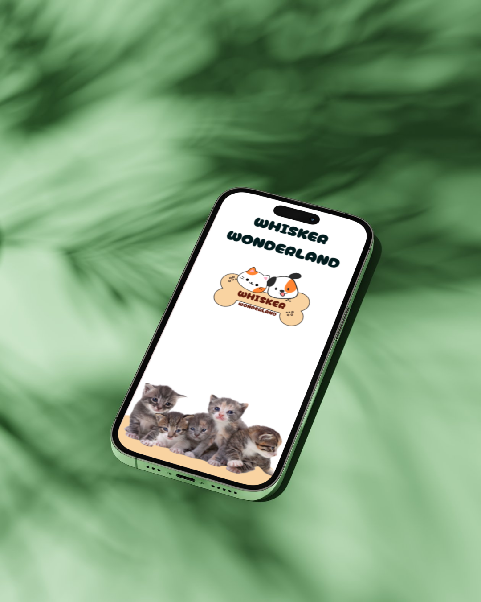
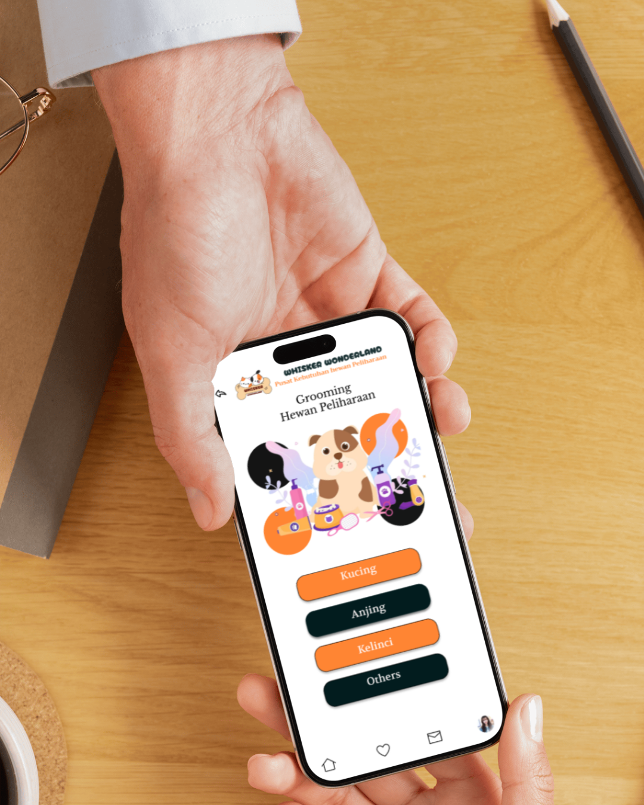
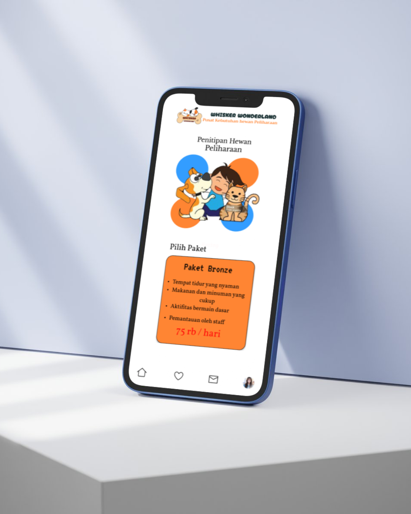
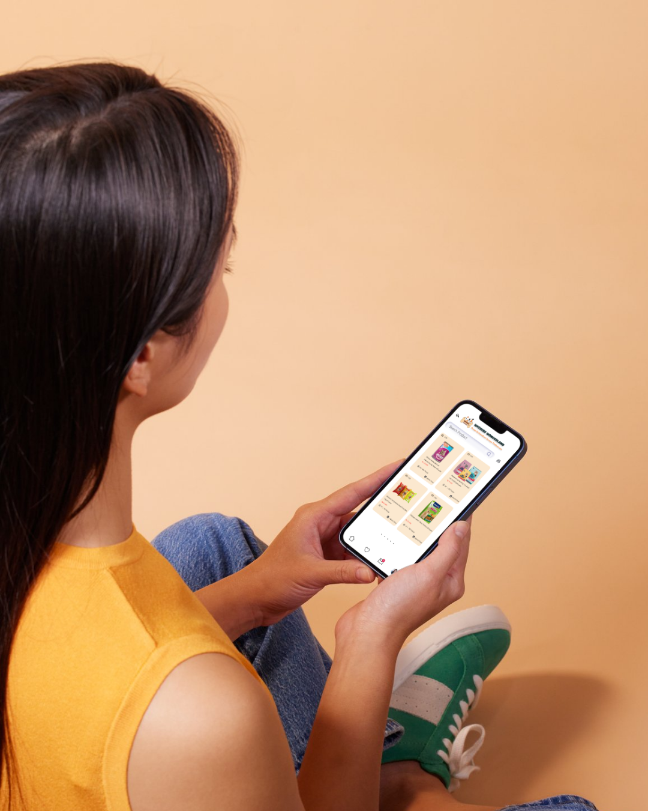

Whisker Wonderland merupakan aplikasi mobile yang dirancang untuk memudahkan pemilik hewan peliharaan dalam mengakses berbagai layanan perawatan hewan dalam satu platform. Aplikasi ini menyediakan beberapa layanan utama seperti grooming hewan, penitipan hewan (pet boarding), serta pembelian kebutuhan hewan peliharaan seperti makanan, obat, dan perlengkapan lainnya.



